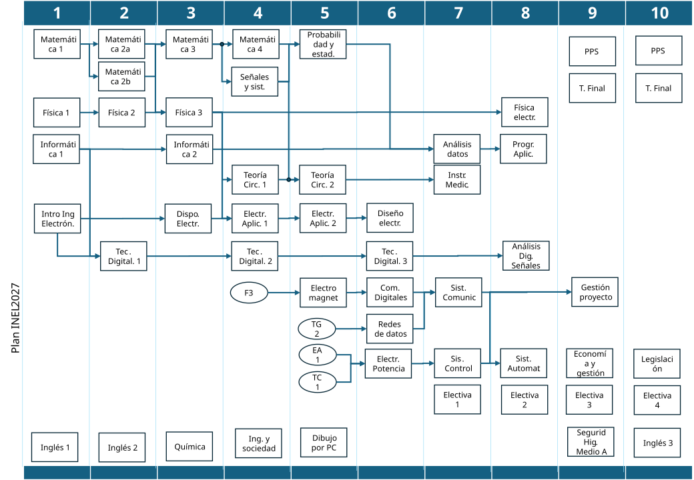

📆 Plan 2011
Asignatura
Estado
Obligatorias aprobadas: 0
Redes: 0
Multimedia: 0
Agro: 0
Mayor orientación: 0
Obligatorias (29)
Redes (11)
Multimedia (12)
Agro (13)
📘 Plan 2024
Asignatura
Equivalencia / estado
Asignaturas aprobadas: 0
Faltan aprobar: 50
Nota: Probabilidad y estadística requiere rendir el módulo Procesos estocásticos para obtener la equivalencia. Se trata de un examen múltiple choice en fechas de finales. Se dará la teoría a través del Campus Virtual.
En Agro y Multimedios no se completan las "48 materias + Inglés 3 + Electrónica de Potencia" en el simulador.
Diagrama Plan 2024

Contracursada
Sin contracursada
Titulo intermedio tras finalizar el sexto cuatrimestre